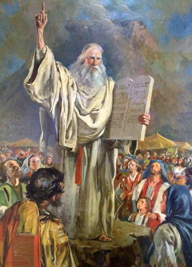
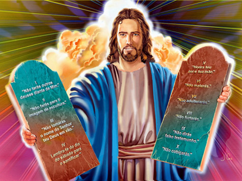
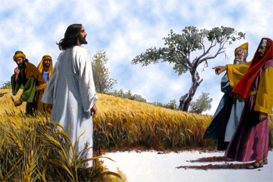
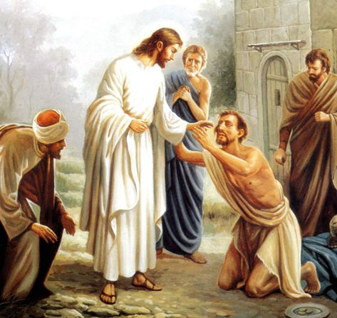
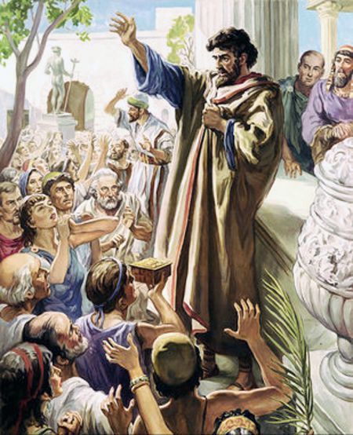
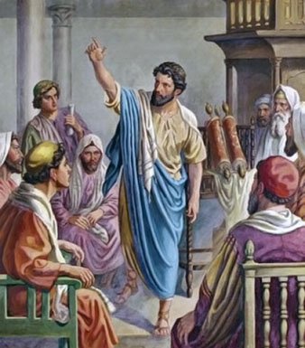
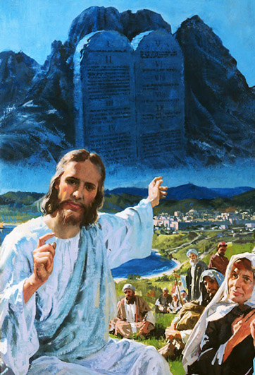

Pela força de suas palavras o Senhor formou os céus a terra o mar e tudo o que neles há, quando a terra foi formada era de extraordinária beleza, no entanto, foi no sexto dia da criação que o Senhor disse: Gênesis 1:26-27.
O homem foi formado à imagem de Deus, tanto na aparência exterior como no caráter. Cristo somente é a expressa imagem do Pai. "O Filho é o resplendor da glória de Deus e a expressão exata do seu ser, sustentando todas as coisas por sua palavra poderosa. Depois de ter realizado a purificação dos pecados, ele se assentou à direita da Majestade nas alturas, tornando-se tão superior aos anjos quanto o nome que herdou é superior ao deles" (Hebreus 1:3-4), mas o homem foi formado a semelhança de Deus. Sua natureza estava em harmonia com a vontade de Deus. A mente era capaz de compreender as coisas divinas. As afeições eram puras; os apetites e paixões estavam sob domínio da razão. Ele era santo e feliz, tendo a imagem de Deus, e estando em perfeita obediência à sua vontade.
Ellen G. White, Patriarcas e Profetas, pág 28
Não conhecia o pecado, estava vestido com as vestes da justiça de Deus, que lhe proporcionava perfeição, ou seja, era dotado da natureza divina do Criador Salmos 104:1-2. Escritos da lavra da irmã White, assevera:
Esse casal, que não tinha pecados, não fazia uso de vestes artificiais; estavam revestidos de uma cobertura de luz e glória, tal como a usam os anjos. Enquanto viveram em obediência a Deus, esta veste de luz continuou a envolvê-los.
Ellen G. White, Patriarcas e Profetas, pág 29 / História da Redenção, pág 21 / Eventos Finais, pág 292
Então plantou o Senhor Deus um jardim no Éden e colocou o noviço casal para ali habitar e dominar sobre todos os animais que havia criado. Gênesis 2:8. Gênesis 2:15-17. E quando a obra da criação estava completa o Senhor estabeleceu o memorial da sua criação. Segundo escritos da lavra de Uriah Smith, o Sábado foi instituído no princípio, ao terminar a primeira semana da criação, Gênesis 2:1-3.
É de se notar que o repouso de Deus no sétimo dia tornou-o o dia de repouso, ou o Sábado (repouso) do Senhor. Nunca pode deixar de ser o seu dia de repouso, visto que este nunca pode ser mudado. Ele santificou então, ou pôs de parte, esse dia, como nos afirma o relato, e essa santificação nunca pode cessar, a não ser que seja retirado por ato da parte de Jeová tão direto e explícito como aquele pelo qual a colocou sobre o dia no começo.
SMITH, Uriah, As Profecias do Apocalipse , pág 290
De acordo com apena inspirada:
O sábado foi confiado a Adão, pai e representante de toda a família humana. Sua observância deveria ser um ato de grato reconhecimento, por parte de todos os que morassem sobre a Terra, de que Deus era seu Criador e legítimo Soberano; de que eles eram a obra de Suas mãos, e súditos de Sua autoridade. Assim, a instituição era inteiramente comemorativa, e foi dada a toda a humanidade. Nada havia nela prefigurativo, ou de aplicação restrita a qualquer povo.
Ellen G. White, Patriarcas e Profetas, pág 30
O Todo Poderoso, em sua infinita sabedoria, viu que o repouso do Sábado era essencial para o homem, mesmo no Éden. Ele necessitava por de lado seus próprios interesses durante um dia dos sete e dedicá-lo a total adoração ao Criador. Essa é a verdadeira razão pela qual Cristo disse: Marcos 2:27. Vislumbra-se que o Sábado foi instituído antes do pecado, e seria observado para sempre por Adão e Eva, portanto não pode ser prefigurativo, tipo, sombra ou símbolo, como alguns incausto querem atribuir com interpretações fora do contexto, veja o que diz Uriah Smith:
O Sábado nada encerra de natureza típica, ou cerimonial porque foi instituído antes de o homem pecar, e por isso pertence a um tempo em que, na própria natureza das coisas, não podia existir um tipo ou sombra.
As leis e instituições que existiram antes da queda do homem foram primárias em sua natureza, saíram da relação entre Deus e o homem e dos homens entre si, e assim continuariam sempre se o homem nunca tivesse pecado e não fossem afetadas pelo seu pecado. Noutros termos, eram, em sua própria natureza de coisas, imutáveis e eternas. As leis cerimoniais e típicas deveram a sua origem ao fato de o homem ter pecado, e nunca teriam existido se o pecado não tivesse sido um fato. Foram sujeitas a mudanças de dispensação para dispensação. E estas, e só estas, foram abolidas na cruz. A lei do Sábado era primária e, portanto, imutável e eterna.
SMITH, Uriah, As Profecias do Apocalipse, pág 290
Antes do pecado o homem se cobria com uma veste de luz e glória, com a queda de Adão, foi perdida esta veste, o plano de redenção foi estabelecido para resgatar pecadores penitentes ao aprisco das ovelhas de Cristo. Deus designou que nossas vestes fossem uma lembrança da veste celestial, natureza divina, com que ele finalmente cobrirá os remidos. Apocalipse 3:5. Com a queda de Adão, foi apresentado o Plano de redenção, com símbolos, cerimônias, tipos e sombras, veja um exemplo:
Os israelitas que conscienciosamente recusassem misturar lã e linho em suas vestes diárias, e visem nisso a lição que Deus designou ensinar-lhes, também se afastariam do pecado. Todo o seu vestuário, feito de apenas uma qualidade de tecido, continuamente os lembrava da veste perfeita da justiça de Cristo concedida aos fiéis.
Haskell, A Cruz e sua Sombra, pág 282
O homem caído, perdera sua natureza divina e estava separado de Deus pelo pecado original (Isaías 59:2), a natureza pecaminosa contraída por Adão com o pecado, necessitava agora do substituto, somente Cristo, ser igual a Deus, poderia expiar o pecado do homem e pagar o preço exigido pela transgressão da santa Lei de Deus, então o Plano de redenção foi instituído com tipos e sombras apontando para cordeiro de Deus que tira os pecados do mundo na chamada Lei cerimonial. As Leis cerimoniais eram regulamentos utilizados por Deus para ensinar o Plano de Redenção mediante símbolo e práticas de culto. De acordo com WHITE,
As ofertas sacrificais foram ordenadas por Deus a fim de serem para o homem uma perpétua lembrança de seu pecado, e um reconhecimento do mesmo, bem como seriam uma confissão de sua fé no redentor prometido. Destinava-se a impressionar a raça decaída com a solene verdade de que foi o pecado que causou a morte. Para Adão, a oferta do primeiro sacrifício foi uma cerimônia dolorosíssima. Sua mão deveria erguer-se para tirar uma vida, a qual unicamente Deus poderia dar.
Ellen G. White, Patriarcas e Profetas, pág 64
Segundo textos do Antigo Testamento essas leis entraram em vigor logo após o pecado; com Caim e Abel oferecendo sacrifícios. Gênesis 4:3-4. Esse texto prova que a lei cerimonial e as ofertas de holocaustos tiveram sua origem à porta do Éden e estendeu-se até a cruz. Durante toda a era patriarcal, os fiéis servos do Senhor ergueram rústicos altares de pedra, sobre os quais eram oferecidos sacrifícios apontando para o Salvador. Gênesis 12:7. No entanto, após o período de servidão no Egito, o povo de Deus estava tão propenso para idolatria que o Senhor ordenou a construção de um altar de bronze no átrio do tabernáculo. O oferecimento de sacrifício de holocausto pelo pai de família (patriarca), sofreu alteração, agora ele tinha que trazer ao santuário e o sacerdote oficiante ficava incumbido de oferecer o sacrifício. Deuteronômio 2:5-6. Observa-se que o dízimo estava incluso na lei cerimonial, no entanto, não foi cravado na cruz.
Mesmo antes do Sinai, a Lei de Deus, os Mandamentos e os Estatutos eram conhecidos, amados e obedecidos pelo povo do Altíssimo durante toda a era patriarcal, do Éden ao Sinai, antes da codificação. Gênesis 26:5. A mesma lei obedecida por Abraão, foi ensinada por ele e seguida por sua descendência, veja o exemplo de Tamar, foi acusada de ter infringido o sétimo mandamento da Lei de Jeová, o adultério. Gênesis 38:24. Temos ainda outro exemplo, de José no Egito, da devida obediência a este mandamento. Gênesis 39:9. Neste texto, restou comprovado de forma contundente que a infração aos mandamentos de Deus é pecado, ou seja. I João 3:4-5. José, evitou o adultério, pois sabia que era transgressão da Lei do Senhor, logo, a lei era obedecida antes de ser codificada no Sinai. Jesus se manifestou para tirar os nossos pecado, ou seja, para deixarmos de transgredir a Lei, a mesma que José e Abrão guardou, Cristo nunca pecou, porque ele nunca transgrediu a Lei. Temos ainda o exemplo de Jacó, em atendimento a observância dos dois primeiros mandamento, também contidos na lei codificada no Sinai. Gênesis 35:2-3. Esse texto, prova de forma cristalina que a Lei era ensinada de pai para filho, o ensino da Lei era verbal, não havia escrita. Êxodo 13:8-9. Deuteronômio 11:19.
Assim como a Lei, o Sábado, o quarto mandamento da aludida Lei, com certeza era ensinado e observado desde o Éden pelos servos do Criador, vejamos exemplos de textos que comprovam a observância do Sábado antes do Sinai. Êxodo 16:22-23. Êxodo 16:25. Antes de chegar ao Sinai, o Senhor forneceu o maná a seu povo, porém, no sexto dia concedia-lhes em dobro para repousarem no santo dia do Senhor, haja vista, que no Sábado não era encontrado maná nos campos. Êxodo 16:27. Em função de alguns desobedecerem a ordem do Altíssimo, ele disse para não sair do seu lugar para apanhar maná, não foi uma ordem proibitiva impedindo as pessoas de se moverem ao Sábado. Êxodo 16:29-30.
O SÁBADO, CODIFICADO NO SINAI
Logo depois de acamparem no Sinai, Moisés foi chamado à presença do Senhor e recebeu as duas Tábuas de pedra escrita pelo dedo de Deus, a Lei dos Dez Mandamentos estava codificada. Êxodo 31:18. Êxodo 32:16. Esta foi a única parte da Bíblia escrita por Deus. Moisés escreveu o Pentateuco por inspiração divina. A lei não fora proferida com exclusividade para os Hebreus, mas, para todos os homens, Eclesiastes 12:13.
Os preceitos morais do decálogo foram esculpidos para toda a humanidade amar e obedecê-lo, tendo em vista, que os dez preceitos, abrangem os deveres do homem para com Deus nos quatro primeiros mandamentos, e os seis últimos retratam nossos deveres para com nossos semelhantes. Todos os dez mandamentos estão baseados no fundamental principio do amor. Lucas 10:27. Quando Jesus respondeu, ele estava se reportando para o fundamento da Lei que é o amor a Deus e ao próximo, os quatro primeiros mandamentos se obedecidos, provam que amamos a Deus, da mesma sorte os seis últimos mandamentos, se obedecidos, provam que amamos o próximo. Paulo repete o ensino de Jesus fundamentado no Velho Testamento, citando alguns dos mandamentos do decálogo que provam amar ao próximo. Romanos 13:8-10. Na verdade estes dois ensinamentos não foram inovados por Jesus nem por Paulo, eles simplesmente citaram o Velho Testamento, Deuteronômio 6:5. Levítico 19:18.
A lei cerimonial, por inspiração divina foi escrita por Moisés e entregue aos levitas, Deuteronômio 31:24-26. Ao passo que a Lei moral dos dez mandamentos foi escrita por Deus e entregue a Moisés no Monte Sinai, Neemias 9:13-14. O Sábado figurava no quarto mandamento da Lei, chamando a atenção do povo, que por quatrocentos anos ficaram privados de obedecer ao Sábado, pela escravidão sofrida no Egito. Por isso o Senhor disse: Êxodo 20:8-11. Veja, que não foi uma instituição para os Hebreus no Sinai, o Senhor disse "lembra-te", porque haviam esquecidos pelos anos de penúria no Egito. Daí por diante o Sábado passou a ser novamente respeitado, amado e guardado pelo povo de Deus, que não compravam, nem vendiam nesse dia, era dia consagrado de adoração a Jeová. Levítico 23:3. Neemias 10:31. Neemias 13:16-19. Jeremias 17:21.
O povo do Senhor se reuniam para lhe adorar sempre aos Sábados, Luas Novas e dias de Festas, não existe nenhum resquício na Lei Cerimonial ou em todo o Velho Testamento que nos autorize aceitar que a ressureição de Cristo alterou o dia de guarda do Sábado para o domingo. Se o Sábado fosse cravado na cruz, como alegam alguns, ele seria tipo, o que não é, e com certeza teria alguma indicação de tal mudança dentro do Plano de Redenção, e no sistema cerimonial, no entanto, as Escrituras nos ensinam que o Sábado e as Luas Novas sempre foram os dias de culto e adoração ao Criador. I Crônicas 23:30-31. A porta do Templo só era aberta nos dias de adoração, quais sejam, Sábado e Lua Nova. Ezequiel profetiza não só para Israel, mas, para os povos da terra adorar o Senhor nos dias mencionados. Ezequiel 46:1-3. Este texto não deixa dúvidas de que os servos do Senhor se congregavam Sábado e Lua Nova. II Reis 4:22-23. Ademais, o Sábado não é só o memorial da criação, mas o sinal entre Deus e o seu povo, Êxodo 31:13. Ezequiel 20:12. É imperioso ressaltar, que o Sábado é um sinal que distingue Deus dos deuses falsos, relata o profeta, Jeremias 10:11-12.
O Sábado é um sinal que lembra aos homens que Deus fez os céus a terra e tudo que nela há, portanto, digno de ser adorado. Ezequiel 20:20.
O sábado é o sinal que Deus estabeleceu em reconhecimento dele, por parte de seu povo, como seu único Deus legítimo.
FILHO, Guilherme Stein, O Sábado, pág 22
Ao livrar o Senhor, do Egito, o seu povo Israel, e confiar-lhes sua lei, ensinou-lhes que, pela observância do Sábado, deveriam distinguir-se dos idólatras. Esse deveria ser o sinal da diferença entre os que reconheciam a soberania de Deus e os que recusavam aceitá-la como seu criador e rei.
Ellen G. White, Testemunhos para a Igreja, vol. 6, pág 349 / Conselhos para a Igreja, pág 266 / Testemunhos Seletos 3, pág 7
Os filhos de Israel deveriam guardar o sábado como aliança eterna em suas gerações, e sabemos que a descendência de Abraão e herdeiros, são todos os que estão em Cristo. Êxodo 31:16-17.
O Sábado foi o sinal para Israel outrora, e também é o sinal entre Deus e o seu povo nos últimos dias, firmado com os remanescentes.
Assim como o Sábado foi o sinal que distinguiu Israel quando saiu do Egito para entrar em Canaã, é também o sinal que deve distinguir o povo de Deus que sai do mundo para entrar no repouso celestial. O Sábado é um sinal do relacionamento entre Deus e o seu povo, sinal de que este honra a lei de Deus. É o que distingue ente os fiéis súditos de Deus e os transgressores. O poder que criou todas as coisas é o que torna a restaurar a alma à sua própria semelhança. Para os que guardam o Sábado, esse dia é o sinal da santificação. O Sábado é o sinal de que Deus os reconhece como seu povo eleito, o penhor de que cumprirá sua parte no concerto.
Ellen G. White, Testemunhos para a Igreja 6, pág 349 / Conselhos para a Igreja, pág 266-267 / Testemunhos Seletos 3, pág 7
O SÁBADO NO NOVO TESTAMENTO, NO TEMPO DE JESUS
O Novo Testamento contém informações plausíveis acerca da observância do Sábado. mormente os ensinamentos de Cristo em relação a Lei e ao Sábado. O próprio Mestre disse que não veio para abolir a Lei ou os profetas, logo, ele não veio acabar com a Lei ou cravar na cruz. Mateus 5:17-18. Com certeza a Lei não foi abolida, nem mesmo pela fé. Se Cristo tivesse cravado a Lei e o Sábado na cruz, Paulo não teria repetido os seus ensinamentos. Romanos 3:31. Jesus veio para engrandecer a Lei nos corações dos homens. Isaías 42:21. Hebreus 10:16. Jesus veio para justificar pecadores pela fé, no entanto, Ele só pode justificar pecadores penitentes que obedecem a sua Lei, Romanos 2:13. É imperioso mencionar que, se Jesus não vai justificar os simples ouvidores da Lei, imagine o que acontecerá com aqueles que odeiam a Lei e ensinam o povo a não guardar. Mateus 5:19. A palavra do Senhor anuncia algo terrível para aqueles que violam os mandamentos e omitem o ensinamento da guarda da lei de Deus. Apocalipse 22:19.
Enquanto o Messias engrandecia a Lei nos corações dos homens, tornando-a espiritual, Satanás utilizava instrumentos dentro do judaísmo, como os rabinos, para tornar a Lei e o Sábado frio, formal e um jugo. Os Judeus criaram tradições ao longo dos séculos e constantemente acusavam Jesus, assim foi quanto ao tributo a César, no entanto, a primeira controvérsia sabática diz respeito a licitude dos discípulos colherem espigas em dia de Sábado. Lucas 6:1-2. Em seu zelo cego, Os judeus ortodoxos muito se apegavam as suas tradições, máxime, as do Mishnah e do Talmude, estes livros contém tradições rabínicas proibitivas de certas ações em dia de Sábado, esquecendo os pontos principais da Lei a misericórdia, o amor e a fé, por isso Jesus tentava ensiná-los o verdadeiro sentido da Lei, que não está focada em formalismo, mas no amor a Deus e ao próximo. O texto aludido em Lucas fala de Sábado segundo-primeiro, trata-se de uma Lua Nova, segundo o primeiro do mês. A acusação de que Jesus estaria praticando ato ilícito era infundado, Jesus conhecia as Escrituras e estava amparado por uma Lei no Velho Testamento que diz: Deuteronômio 23:25. Observa-se, que nem Jesus nem os discípulos cometeram qualquer ilícito, os discípulos tiveram o cuidado de arrancar as espigas com as mãos, porque era permitido apanhar espigas e debulhar com as mãos para comer, não poderia usar a foice, logo, não houve a transgressão do Sábado, o que Jesus infringiu foram as tradições contidas no mishnah e no Talmude, segundo esses livros cometeram dois ilícitos, colher e debulhar. Jesus chama a atenção deles para o que fez Davi quando teve fome, comeu os pães da preposição e ficou sem culpa. E finalizou dizendo que o Filho do Homem é maior do que o templo e Senhor do Sábado que foi feito para o homem repousar e não do domingo.
Para os Fariseus, ao colherem as espigas, eles eram culpados de segar, ao esfrega-las com as mãos, eram culpados de debulhar, ao separar os grãos da palha, eram culpados de joeirar; e, por todo processo eram culpados de preparar uma refeição no dia de Sábado. Guilherme Stein elenca vários formalismos criados pelos doutores da lei, que buscavam a santificação pelas obras da lei.
As ideias então reinantes a respeito da Lei de Deus e professadas pelos doutores da Lei eram das mais disparas, sobretudo no que dizia respeito ao repouso do sétimo dia. O caráter verdadeiramente sublime do repouso do Sábado e o seu fim altamente significativo tinham eles completamente perdido de vista. A observância do Sábado se resumia para eles numa absoluta abstenção de tudo quanto de alguma maneira pudesse interferir com o repouso meramente material, acumularam ordenanças e preceitos de sua própria lavra. Assim, por exemplo, era terminantemente proibido aos Sábados, segundo os preceitos acumulativos desses doutores, atar um nó ou desatá-lo com dois pontos que fossem, rasgar um pano ou remendá-lo com dois pontos que fosse; escrever duas letras ou apagá-la (o que equivalia a construir ou demolir), espremer uma fruta para extrair o suco, mergulhar em água um membro fraturado, comer um ovo que tivesse sido posto no Sábado. "Atam fardos pesados, e põe-nos sobre os ombros dos homens, entretanto que eles mesmos nem com o dedo querem movê-lo." (Luc. 11:46)
FILHO, G. Stein, O Sábado, pág 64
Jesus nunca transgrediu a Lei, muito menos o Sábado, era seu costume guardá-lo, no entanto ele ensinava os mestres judeus que suas tradições eram um fardo pesado que nem mesmo eles queriam carregá-las, então ele replicou: Mateus 23:4. Para as tradições rabínicas, e não para Deus, Jesus era transgressor do sábado, por colher algumas espigas para saciar a fome, eles acusavam Jesus e os discípulos baseado em tradições rabínicas elencadas em 39 tradições esculpidas no talmude, segundo o texto:
Nos seus comentários talmúdicos sobre Torá ou Lei, tinham trinta e nove restrições para o Sábado, entre os quais se achavam nadar, dançar e pular. Quando Jesus e seus discípulos apanhavam alguns grãos, era supostamente uma violação da terceira restrição delas, que proibia a colheita no Sábado. E essas trinta e nove restrições foram divididas em quase inúmeras restrições menores. Assim não se podia nem mesmo apanhar uma pulga no Sábado, visto que isto significava caçar, o que era proibido. Andar na grama era também proibido, visto que pisar na grama significava realmente debulhá-lha. Tinha que ter cuidado com a alimentação das galinhas, para que não ficasse nem um único grão no chão, visto que pudesse brotar e a pessoa seria culpada de semear no dia do Sábado.
FERRAZ, Itanel, Segue-me, pág 143
Acusaram Jesus de curar em dia de Sábado um homem que tinha a mão ressequida, embora as normas codificadas no Mishnah (segundo Tratado de Teologia Adventista, vol. 9, é um livro de codificação das tradições rabínicas, escritas no 3° século d.C) e no Talmude, que permitiam uma pessoa doente ou acidentada receber tratamento no Sábado, mas somente em caso de risco de vida, vejamos a restrição talmúdica:
O Talmude não permitia nem mesmo dar alívio a alguém que sofresse no Sábado, a menos que estivesse ameaçado de morte. No Sábado não podia endireitar um osso quebrado, nem se podia aplicar um cataplasma ou uma atadura a um tornozelo deslocado. Uma prova dos extremos a que iam na exaltação do Sábado é na sua declaração de que os pecado de todo aquele que observar estritamente toda a lei do Sábado, embora seja ele adorador de ídolos ser-lhe-ão perdoados.
FERRAZ, Itanel, Segue-me, pág 143-144
Mateus 12:9-12. A resposta de Jesus é esclarecedora, o Sábado é dia de fazer o bem, porque o Sábado é o dia do Senhor, de adoração, visitar, evangelizar, socorrer os necessitados, cuidar dos doentes, é um dia dedicado a trabalho espiritual. Os fariseus acusavam Jesus de transgredir as suas tradições no Sábado e Jesus perguntou, porque eles transgridem os Mandamentos de Deus por conta das tradições inventadas por eles como sinal de santidade. Mateus 15:1-3.
Vislumbra-se, que a controvérsia dos fariseus com Jesus era baseada em tradições, Jesus exaltou os mandamentos do Pai e repudiou as tradições, tendo em vista, que Jesus nunca transgrediu o Sábado ou qualquer um dos mandamentos do decálogo, destarte, se Jesus transgredisse qualquer um dos mandamentos do decálogo seria um pecado e ele pecador, porque I João 3:4. É cediço que Jesus nunca pecou, porque com certeza, ele nunca transgrediu a Lei. Quando Jesus curou um paralítico, os judeus protestaram acusando-o de transgredir o Sábado porque o homem carregou o seu leito. João 5:5; 8, 9. João5:16-18. Para Deus, o simples levar o leito não estava contemplado na proibição de levar cargas, a restrição de levar cargas em serviços temporais era proibido, mas, o levar o próprio leito era proibido pelas tradições e não pela lei do Senhor. Baseado em Jeremias 17:22, que proibia o transporte de cargas em dia de Sábado, criaram no livro de tradições rabínicas o Mishnah, muitas regras acerca de mover objeto, não podia levar uma pena no bolso dia de Sábado, estava carregando peso, arrastar uma cadeira poderia fazer sulco e que levaria nascer uma semente, se eles fizessem isso era acusado de estar plantando, o Talmude proibia catar pulgas no Sábado, sob alegação de estar caçando etc. Quando Jesus disse: Meu Pai trabalha até agora eu continuo trabalhando até agora, ele estava se referindo ao trabalho espiritual, haja vista, que Jesus não trabalhava como carpinteiro em dia de Sábado, não existe nenhuma evidência nas Escrituras, muito menos texto que indique que ele exercia trabalhos manuais dia de Sábado, mas segundo seu costume, estava congregado. Deus está constantemente empenhado na obra de redenção do homem, atendendo orações, abençoando seus servos, mesmo no Sábado, e Jesus também estava empenhado na obra de Redenção, de resgate do pecador, porque esse trabalho é licito fazer no Sábado ou em qualquer dia. Jesus disse: Eu e o Pai somos um, na mesma substância e parecer, portanto Jesus não queria dizer que o Pai e Ele estavam transgredindo o Sábado, porque foi o Pai quem descansou, abençoou, santificou e mandou guardar o Sábado. Veja um exemplo como as tradições são incorporadas como santidade, elas surgem por comparações, suposições, destituídas de um Assim diz o Senhor. segundo BOYER. O. S. 1978, Pequena Enciclopédia Bíblica, pág. 553-554. O Criador proibiu aos Israelitas apanhar maná no Sábado, ele disse: Êxodo 16:29. Os judeus supuseram que ninguém poderia se mover em dia de Sábado. Os escribas fixaram o limite de 2000 côvados a distância que se podia andar no Sábado, baseados em um texto bíblico que limitava a distância entre o povo e Arca da Aliança. Josué 3:4. Sendo assim, assumiram que a distância entre o povo e o tabernáculo, no acampamento, era a mesma de 2000 côvados, sendo permitido ao povo andar a aludida distância para assistir aos ritos no tabernáculo no Sábado. Daí surgiu a tradição da jornada de um Sábado, Atos 1:12. Não existe nenhuma lei promulgada por Deus, determinando que não se podia andar mais de 2000 côvados no Sábado, no entanto, baseados nos texto elencados e por suposição criaram a tradição da jornada de um Sábado, limitando a distância de 2000 côvados, depois esta tradições foi codificada no Mishnah. Se Jesus andasse acima dessa recomendação era acusado de transgredir o Sábado, quando na verdade, Jesus não transgredia o Sábado, mas, tentava mostrar para os judeus que o formalismo sem vida, destituída de amor para com o próximo era uma doença que precisava ser curada, dessa forma, Jesus trabalhava mesmo no Sábado para abrir os olhos dos judeus cegos pela justiça própria.
Em resumo, para o homem espiritual é óbvio que o trabalho espiritual no Sábado é perfeitamente compreensível, para o homem dominado pela justiça própria é um absurdo. Os fariseus, como visto, criaram leis absurdas extrabíblica, como o talmude que proibia carregar pena, catar pulga, arrastar cadeira e Jornada de um sábado, entre outras. Observa-se que, mesmo quando Jesus estava no túmulo, seus discípulos continuaram guardando o santo dia do Senhor, como ele mesmo ensinou. As mulheres, depois de observar onde o corpo dele fora posto, prepararam aromas e bálsamos e descansaram segundo o mandamento Lucas 23:54-56. Lucas 24:1. Observa-se que as mulheres guardavam o Sábado, em respeito ao Mandamento, ou seja, ao Decálogo que Deus entregou a Moisés. Com efeito, se as mulheres estavam guardando o sétimo dia depois da morte de Jesus é porque ele nunca ensinou de forma diversa dos mandamentos de Deus, não autorizou nenhuma mudança por conta de sua ressurreição, porque, depois que ressuscitou. Lucas 24:44. Lucas 24:27. Mateus 28:18-20.
Após discorrer toda a Escritura e ensinar aos discípulos tudo o que dele estava escrito, na Lei, nos Profetas e nos Salmos, os tipos que se cumpriram no primeiro advento, Ele não ensinou que o Sábado foi mudado, aqui seria o momento ideal para anunciar tal mudança se fosse verdade. Com certeza, a guarda do Sábado está incluída no "ide e ensinai" que Jesus recomendou aos discípulos ensinarem depois da sua ressurreição, haja vista, que os apóstolos continuaram guardando o Sábado após a ressurreição de Cristo e nunca o domingo.
O SÁBADO NOS DIAS APOSTÓLICOS
Depois da partida de Marcos, Paulo e Barnabé visitaram Antioquia da Pisídia, e falou do cumprimento das profecias concernente ao Messias, Paulo fez um belo discurso e pregou-lhes o arrependimento e a remissão dos pecados mediante os méritos de Cristo. E, navegamos de Pafos, Paulo e seus companheiros dirigiram-se a Perge da Panfília. Atos 13:13-15. As palavras de Paulo das boas novas da salvação eram para judeus e gentios igualmente e trouxeram esperança e alegria aos gentios, que pediram que no Sábado seguinte lhe fossem ditas as mesmas coisas. Estava profetizado esta colheita de gentios, Oséias 2:23. Atos 13:42; 44-47. Os judeus movidos de inveja e vendo o evangelho se espalhar na Písidia, em sua cegueira, estimularam alguns contra o apóstolo, no entanto, os gentios receberam a mensagem do evangelho. Atos 13:48. Com o crescimento dos gentios convertidos, mestres judaizantes (eram judeus que simulavam aceitar a fé cristã), no entanto queriam impor alguns ritos, como a circuncisão Atos 15:1.
Os apóstolos listaram proibições a qual os gentios convertidos deveriam se abster, no entanto, não incluíram o Sábado, porque nos tempos apostólicos, esse ponto doutrinário era pacífico, todos os discípulos guardavam o Sábado, não existia guarda de domingo na igreja cristã, tão somente os pagãos veneravam o dia do sol (domingo). A doutrina da igreja primitiva foi a mais pura de todos os tempos, quando o Cordeiro abriu o primeiro selo, Apocalipse 6:2. A profecia dos selos nos ensinam que o cavalo branco simboliza a pureza da doutrina apostólica, logo, ela não foi contaminada por ritos e costumes pagãos, portanto, o domingo nos dias apostólicos não era ponto de controvérsia, não era mencionado na igreja primitiva, esse famigerado dia, foi introduzido na igreja primitiva na época do cavalo negro (apostasia) com Constantino em 313 d.C. Importa Observar, que Paulo falou no Sábado aos judeus e gentios, e foi pedido que ele falasse tão somente no Sábado seguinte, se a ressurreição de Cristo substituiu o sábado ele deveria falar aos gentios no domingo como dia de guarda, no entanto, não foi o que aconteceu. Veja que Paulo trabalhava fazendo tendas e trabalhava de domingo a sexta, e no sábado estava congregado. Atos 18:3-4. As Escrituras nos revelam que não era só na sinagoga que Paulo se reunia, onde tinha guardadores do Sábado ele estava trabalhando pelas almas, ensinando e dando exemplo da guarda do Sábado. Atos 16:13.
O apóstolo Paulo, em seu ministério recorre às passagens que prediziam nascimento, sofrimento, morte e ressurreição de Cristo e não ensinou a guardar o domingo, pelo contrário ele continuava guardando o Sábado, segundo a Bíblia nos relata, esse era o seu costume. Atos 17:2-3. Observa-se que Paulo nunca pregou contra a guarda do Sábado, ele pregava tanto a Judeus como grego o arrependimento e a remissão dos pecados por Cristo Jesus. Atos 20:20-2. Quando Paulo estava em Roma, prisioneiro, lhe foi permitido alugar uma casa por sua conta sob custódia de um guarda, ele aproveitou os dois anos que lhe foram concedidos antes do julgamento para pregar a doutrina de Cristo crucificado, tanto pela Lei como pelos profetas. Atos 28:23. Observa-se, que a pregação de Paulo não restringia a guarda do sábado, a sua grande preocupação estava na controvérsia, a aceitação de Jesus como filho de Deus, uma vez, que o sábado era ponto pacífico. Atos 28:30-31.
O texto seguinte, de forma cristalina, comprova que Paulo não pregava contra os costumes. Atos 28:16-17. No entanto o cristianismo continuou crescendo e muitos difamavam e rejeitavam a doutrina cristã, então os judeus perguntaram a Paulo acerca da novel doutrina, ele respondeu: Atos 28:22. Atos 24:14. Paulo não só acreditava na Lei e nos escritos dos Profetas, como pregava o fundamento da Igreja Primitiva, que era edificada sob sólidos fundamentos, ou seja, a igreja estava Efésios 2:20. Se Paulo acreditava em todas as coisas que estavam de acordo com a Lei e os profetas, como ele poderia guardar o domingo, que nem ainda existia como dia de guarda na igreja cristã? Segundo Uriah Smith,
Os únicos outros escritores inspirados que falam do primeiro dia são: Mateus, Marcos, Lucas e Paulo, e falam dele simplesmente como do primeiro dia da semana, nunca distinguindo-o de qualquer outro dos seis dias de trabalho. E isto é notável, para o ponto de vista popular, pois que três deles falam desse dia no próprio tempo em que se diz ter-se tornado o dia do Senhor por se haver realizado nele a ressureição de Cristo, e dois mencionam-no cerca de trinta anos depois desse acontecimento.
Uriah Smith, As Profecias do Apocalipse, pág 25
Acrescenta ainda, o notável autor.
E o que mais ainda contraria a pretensão em favor do primeiro dia é o fato de que nem Deus nem Cristo jamais reclamaram o primeiro dia como seu, em qualquer sentido diferente do atribuído a qualquer dos outros dias de trabalho. A nenhum deles foi jamais oposta qualquer benção ou atribuída qualquer santidade. Se devesse chamar-se o dia do Senhor por se ter realizado nele a ressurreição de Cristo, a inspiração ter-nos-ia, sem dúvidas, informado disso. Mas há outros acontecimentos igualmente essenciais ao plano de salvação, como por exemplo a crucificação e a ascensão. E na ausência de qualquer instrução sobre esse ponto por que não chamaremos ao dia, em que qualquer deles ocorreu, o dia do Senhor, com tanta razão como ao dia em que Ele ressuscitou dos mortos?
Uriah Smith, As Profecias do Apocalipse, pág 25
A GUARDA DO SÁBADO PARA OS SALVOS NA NOVA TERRA
O Sábado foi sedimentado no Éden pelo Criador, como memorial da criação e ensinado de pai para filho (lei oral). Gênesis 2:1-3. No Sinai, o Sábado foi exposto no quarto mandamento da Lei do Senhor, codificado e entregue a Moisés para que todo o povo voltasse a guardá-lo após os anos de penúria do cativeiro egípcio. Êxodo 20:11. Foi uma aliança eterna celebrada com Israel, o Sábado é o sinal entre Deus e seu povo. Êxodo 31:16-17. Tão somente, inferimos que o Israel não é literal, mas, os descendentes de Abraão são os verdadeiros herdeiros segundo a promessa. Gálatas 3:16.
Gálatas 3:6-7. Gálatas 3:29.
A promessa foi feita por Deus a Abraão antes do Sinai, e segundo o livro de Gálatas, a promessa continua válida, veja, qual foi a promessa e porque Deus fez a promessa a Abraão e sua descendência: Gênesis 26:4-5. Inferimos que as promessas foram feitas, não só para a descendência literal de Abraão, mas, para todos que como Abraão obedecerem os mandamentos, estatutos, preceitos e leis inclusive o Sábado revestido da natureza divina de Cristo. Estes são os verdadeiros herdeiros de Abraão pela fé no Salvador. Logo, a Lei e o Sábado, não foram instituídos como sinal apenas para o povo literal de Israel no Sinai, mas, para todos os herdeiros de Abraão, em Cristo Jesus até a consumação dos séculos.
Resta um repouso sabático, somente para o povo de Deus, os que obedecem à lei de Deus por amor, porque estão revestidos com a natureza divina do Salvador. É notório, que neste texto, Paulo menciona a obra da criação, ou seja, apresenta o Sábado como memorial da criação, quando diz que alguns ainda dizem que o único dos dez Mandamentos que não encontraram no Novo Testamento foi o Sábado. Outrossim, vale lembrar, que o Sábado foi instituído no Éden, confirmado no Sinai, duplamente abençoado com a Redenção de Cristo no Calvário e se firmará eternamente na nova terra. Hebreus 4:3-4; 9.
Com efeito, o repouso sabático que resta para o povo de Deus, está no futuro, representa o milênio e consequentemente a guarda do Sábado na nova terra. Ademais, vale lembrar, que o Senhor está convidando todos os povos da terra para serem herdeiros de Abraão segundo a promessa em Cristo Jesus, obedecendo seu santo dia, porque sua salvação está prestes a manifestar-se para todo aquele que guarda o seu santo dia. Isaías 56:2-7. Jesus disse que ia preparar lugar para os herdeiros da promessa, e virá buscá-los, infere-se, que o lugar que Cristo foi preparar cabe aos herdeiros da promessa feita pelo profeta Isaías, os que reverenciam seu santo dia, o Sábado. João 14:1-3.
São para aqueles que amam seus mandamentos. João 14:15. São chamados de reparador de brecha, feita na Lei de Deus, pelo homem do pecado, ou filho da perdição que tentaria mudar os tempos e Lei, ele fez uma brecha na Lei do Decálogo, retirando o Sábado do quarto mandamento da Lei escrita pelo dedo de Deus, e em seu lugar colocou, guardai domingos e festas. Cabe aos remanescentes, reparar as brechas, defendendo com perigo de vida a obediência a santa Lei de Deus e a guarda do sétimo dia. Isaías 58:12-14. É imperioso salientar, que tanto a santa Lei de Deus quanto o Sábado são alvos constantes de ataque de Satanás ao longo da história da igreja de Deus. É seu designo enfraquecer a fé do povo do Senhor na guarda do sábado, para isto ele estimula o crente a negligenciar os deveres neste dia sagrado para Deus e seu povo, utilizando instrumentos para fazer uma brecha na Lei, segundo esculpiu o profeta Isaías, no entanto, o Senhor chamou os remanescentes para reparar a brecha. Amós 9:11.
O profeta descreve aqui um povo que, em tempo de geral abandono da verdade e da justiça, está procurando restaurar os princípios que são o fundamento do reino de Deus. São os reparadores das brechas que tem sido feitas na Lei de Deus – preceitos de justiça, verdade e pureza, cuja obediência é para sua perpétua salvaguarda. No tempo do fim, toda instituição divina deve ser restaurada, a brecha feita na Lei, quando o Sábado foi mudado pelo homem deve ser reparada.
Ellen G. White, Profetas e Reis, pág 677-678
Os filhos de Deus que edificarão as antigas ruinas, são aqueles que cultivam os ensinos antigos confiados a Abraão, quando o Senhor lhe fez a promessa, porque obedeceu seus mandamentos, estatuto, preceitos e Leis, com efeito, guardarão o santo Sábado do Senhor com alegria e regozijo. Salmos 118:24. por isso, essa congregação permanecerá sempre diante do Senhor. Jeremias 30:20. O secularismo corrói como gangrena a fé cristã, os pseudos servos do Senhor tem vergonha dos ensinos antigos, separados da justiça de Cristo, buscam preencher o vazio do coração com entretenimentos, no entanto o Senhor lhes adverte Jeremias 6:16. Mesmo com o Senhor advertindo para buscarem as veredas da igreja primitiva, eles respondem, por esse caminho não andaremos, e pretendem se salvar mergulhados na apostasia. Os servos de Deus não tem vergonha da doutrina de Cristo, são aqueles que: Atos 2:42. São aqueles que o Diabo está irado, porque eles amam a Deus e guardam seus mandamentos, Apocalipse 12:17. Apocalipse 14:12. Veja, que a Palavra de Deus de forma cristalina está afirmando que os santos, são os que guardam os mandamentos de Deus, com certeza irão morar com o Senhor na Nova Terra e guardar o Sábado e a Lua Nova. Isaías 66:22-23. Uriah Smith, relata que:
Na nova terra o Sábado, fiel a sua origem e natureza, aparece de novo, e continuará derramar suas bênçãos sobre o povo de Deus por toda a eternidade (Isaías 66:22-23)
SMITH, Uriah, As Profecias do Apocalipse, pág. 290.
Por fim, e de acordo com HASKELL, o Sábado foi instituído como memorial da criação, após consumar as obras da criação, o Senhor repousou e abençoou o sétimo dia, de igual modo, o Messias, morreu no sexto dia e descansou no sétimo, como memorial da Redenção, com isto o Sábado é duplamente abençoado, tanto na criação como na redenção do pecador, com o Senhor do Sábado, Jesus, repousando no sétimo dia após vencer Satanás e resgatar este mundo das garras do enganador. No Sinai, o sábado foi ratificado como sinal eterno de Deus com seu povo, estendendo-se até o Éden, onde será guardado eternamente pela igreja de Deus, logo, o Sábado foi guardado do Éden ao Éden pelo povo do Altíssimo.
A obra de redenção foi completada no sexto dia. Assim como Deus descansou após concluída a obra da criação, Jesus descansou no sepulcro de José durante as sagradas horas daquele santo Sábado. Seus seguidores também descansaram, pois Ele sempre os havia ensinado a obedecer à Santa Lei de Deus. Ele havia proibido a qualquer um o pensamento de que mesmo um jota ou um til da Lei de Deus poderia ser mudado (Mateus 5:17-18). Por quatro mil anos o Sábado havia sido observado como um memorial da criação, mas após a morte do Salvador sobre a cruz o Sábado foi duplamente abençoado. O Sábado, como uma grande ponte, abrange todo o tempo. O primeiro pilar que sustenta essa grande instituição foi colocado no Éden, quando, de acordo com o relato encontrado em Gênesis 2:2-3, Deus e o homem repousaram durante as sagradas horas do Sábado. O segundo pilar da ponte foi fundamentado entre os trovões do Sinai, quando Deus, ao proclamar o quarto Mandamento como se encontra em Êxodo 20:8-11, deu como razão para o homem guardá-lo e santificá-lo o fato de Ele ter repousado da obra da criação no sétimo dia. O terceiro pilar da ponte do Sábado foi santificado pelo sangue do Calvário. Enquanto Jesus, no túmulo, repousava da obra da redenção como registrado em Lucas 23:54-56, os seguidores de Cristo descansaram segundo o Mandamento. O quarto pilar dessa maravilhosa ponte será estabelecido na nova terra. Em Isaías 66:22-23 nos é dito que após ser removido o último vestígio da maldição do pecado da terra, toda a carne, de um Sábado a outro, virá adorar perante o Senhor. Enquanto durarem o novo céu e a nova terra, os redimidos pelo amor do Senhor comemorarão o Sábado tanto como um memorial da obra consumada por Cristo na redenção deste mundo caído, como também um memorial de sua criação.
Haskell, Stephen N., A Cruz e sua Sombra, pág 101